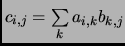
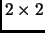
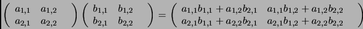

Next:
Wavelet Transform of two
Up:
A example
Previous:
A example
Conventional Multiplication
Conventional multiplication is spelled out as

For a  matrix, there is the following:

Daniel Beatty 2003-06-03